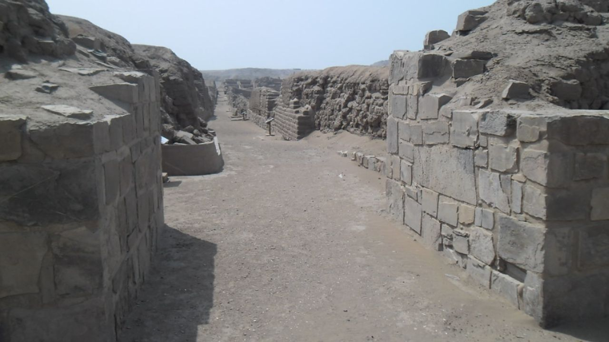

Shore excursions to Pachacamac Archaeological sites



City of Kings & modern cosmopolitan metropolis, 8 hours
A complete journey through the history and modernity of Lima, from the colonial grandeur of the "City of Kings" to its vibrant oceanfront districts.
Detail
You are arriving on a cruise to Lima? we offer deluxe tours according to your time and requirements. Our Special Excursion It will take you to visit the best of Lima. The shore excursions include cars with air-conditioning, professional English speaking tour guides.
Include:
- Certified tourist bus ( air-conditioned bus ).
- 8 hours itinerary
- English-speaking guide
Not Include:
- Extras & gratuities.
8:30AM
Pickup from the main gate of Callao harbor or shuttle bus meeting point, Plaza San Miguel, Plaza Salaverry, Larcomar.
8:45AM
Drive to Pachacamac Earth or realms creator's Temple.
9:45AM
Touring around Archaeological sites Pachacamac.
11:00AM
Drive to the modern city of Lima Barranco Miraflores, Parque del Amor, coastline panoramic view, olive of San Isidro, visit unforgettable Inca Market.
1:30PM
Visite un restaurante tradicional para almorzar por su cuenta.
2:30PM
Viaje en auto a la ciudad de reyes de Lima, palacios, catedrales, catacumbas subterráneas de San Francisco.
4:30PM
Fin de nuestro servicio o regreso a la parada del autobús de enlace.
Cruise service 2025
- August 27. → CORAL PRINCESS / Princess Cruises
- October 20. → MS ZAANDAM / Holland America
- November 25. → MS OOSTERDAM / Holland America
- December 13. → SAPPHIRE PRINCESS / Princess Cruises
- December 17. → OCEANIA MARINA / Oceania Cruises
- December 18. → CELEBRITY ECLIPSE / Celebrity Cruises
- December 18. → SILVER NOVA / Silver Sea
- December 19. → SEVEN SEAS SPLENDOR / Regent Seven Seas
- January 15, 2026. → SILVER NOVA / Silversea
- January 16, 2026. → NORWEGIAN SUN / Norwegian Cruise
- January 16, 2026. → SEABOURN QUEST / Seabourn
- January 17, 2026. → AZAMARA ONWARD / Azamara Cruises
- January 29, 2026. → SERENADE OF THE SEAS / Royal Caribbean
- January 31, 2026. → AMADEA / Phoenix Reisen
- February 03, 2026. → COSTA DELIZIOSA / Costa Cruises
- February 27, 2026. → NORWEGIAN SUN / Norwegian Cruise
- March 23, 2026. → SAPPHIRE PRINCESS / Princess Cruises
- March 24, 2026. → MS OOSTERDAM / Holland America
- March 30, 2026. → SILVER NOVA / Silver Sea
- April 11, 2026. → CELEBRITY ECLIPSE / Celebrity Cruises
- April 12, 2026. → AMERA / Phoenix Reisen
- Julio 25, 2025. → CORAL PRINCESS / Princess Cruises
Price:
85$
Book Now